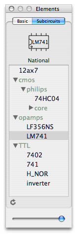
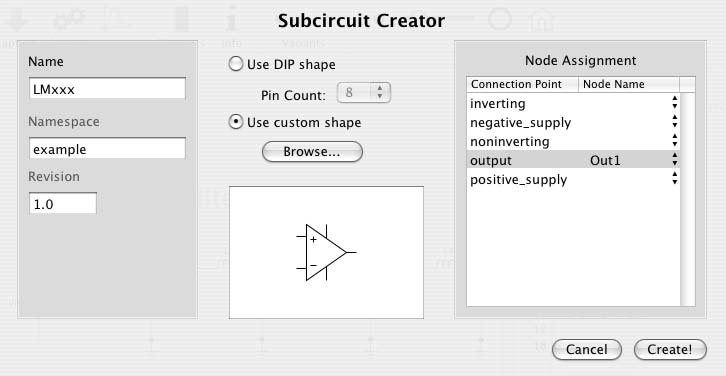

Subcircuits
The Subcircuit Library
How To Create A Subcircuit
Custom Shapes
Netlist-Only Subcircuits
Using Subcircuits
Modifying Subcircuits
|
With MI-SUGAR you can turn circuits or parts of circuits into
reusable schematic elements. Hence, you can create higher-level
elements by using the basic circuit elements (resistor, capacitor,
etc.) and even other high-level elements. This feature is basically
an expansion of SPICE subcircuits into the schematic world. That's
why in MI-SUGAR the high-level elements are called subcircuit elements.
The Subcircuit Library
MI-SUGAR reads subcircuits from a special folder.
You can set the
location of that folder in the Preferences window.
MI-SUGAR helps you organize your subcircuit library by providing
a quick link to the subcircuit folder (in the Circuit menu)
and a refresh button below the subcircuit list in the elements panel.
Note that the subcircuit list mirrors the folder structure of your
local subcircuit library.
MI-SUGAR supports subcircuit namespaces. You can use
namespaces
to categorize your subcircuits. A name clash occurs only if both
the namespace and the name of two subcircuits are identical.
Namespaces are assigned during subcircuit creation and can be any
text string you like. A good namespace
should uniquely identify the creator internationally. Therefore,
reverse domain name notation or a similar scheme is recommended.
For example, I use namespaces which start with "macinit" and
continue with logical group names.
You can also specify a revision for the subcircuit. This can be any
string but usually is a version number or date. The revision is not
used by MI-SUGAR, it's just extra information for the
users of the subcircuit.
|

|
How To Create A Subcircuit
Preparation:
- Open or create the circuit which you want to
turn into a subcircuit.
- If the original subcircuit is a pure netlist then
drop as many node elements on the schematic area
as there will be external ports.
- Label the node elements (in the schematic), which
are going to be used as external ports. Short and
descriptive names are recommended. Use standard
abbreviations, like GND for ground and VCC for supply
voltage.
Now you can create the subcircuit by following these steps:
- Select Make Subcircuit... from the Circuit menu.
- Set the name and, optionally, the namespace and revision of the subcircuit.
- If you are not using a custom shape choose the number of external ports.
- If you are using a custom shape load the shape definition file.
- Assign nodes to the external ports by selecting a node name for
each external port in the assignment table. Blank means "not connected".
- Finally, click on the Create! button. The subcircuit list in
the elements panel refreshes automatically.
Tip: You can also create new subcircuits from existing ones.
Custom Shapes
By default MI-SUGAR uses DIP (dual in-line package) shapes
for all subcircuits. (If you don't know already, pins of a DIP are numbered
in counter-clockwise ascending order, where pin number 1 is marked by
a dot. The pins correspond to the external ports of the subcircuit.)
User-defined, custom shapes are possible. You specify a custom shape by
creating an XML file and loading it in the subcircuit creator.

The file format is defined in the following file:
http://www.macinit.com/schemas/sesdl.xml. The proposed
Subcircuit Element Shape Definition Language (SESDL) let's you specify
the shape in a manner similar to SVG.
MI-SUGAR 0.5.7 does not fully support the SESDL yet. Only paths with move,
lineto, arc and curve commands are recognized.
Here is an example:
<?xml version="1.0" encoding="UTF-8"?>
<!--
Opamp shape with 5 connection points.
Author: Berk Ozer
Date: October 2, 2004
-->
<connectable-shape name="Opamp" version="1" xmlns="http://www.macinit.com/mi-sugar"
xmlns:xsi="http://www.w3.org/2001/XMLSchema-instance"
xsi:schemaLocation="http://www.macinit.com/schemas/sesdl.xsd">
<shape width="60" height="70">
<!-- triangle -->
<path d="M -20 28 l 40 -28 l -40 -28 z"/>
<!-- connectors -->
<path d="M -30 -16 h 10 m 0 32 h -10 m 30 12 v -14 m 0 -28 v -14 m 20 28 h 10"/>
<!-- signs for inverting and non-inverting input -->
<path d="M -13 16 v -6 m -3 3 h 6 m 0 -26 h -6"/>
</shape>
<connection-points>
<connection-point x="-30.0" y="-16.0" name="inverting"/>
<connection-point x="-30.0" y="16.0" name="noninverting"/>
<connection-point x="30.0" y="0.0" name="output"/>
<connection-point x="0.0" y="-28.0" name="negative_supply"/>
<connection-point x="0.0" y="28.0" name="positive_supply"/>
</connection-points>
</connectable-shape>
Netlist-Only Subcircuits
When MI-SUGAR captures a circuit it first compiles a set of
all the subcircuits and device models that the circuit depends on.
Finally the device model definitions are pulled from the device model
library and the subcircuit netlists are copied from the netlist
section of each type of subcircuit. Since MI-SUGAR does
not re-capture
the subcircuits to get the netlist your netlist modifications
will be preserved. This means that you can create subcircuits
that have no schematic representation (e.g., vacuum tubes, which
are expressed as a set of voltage/current equations). To do so you
have to put as many node elements into the schematic as there
will be external ports of the subcircuit. Then you create the
subcircuit in the usual manner. At that stage you need not worry
about the netlist because you're going to modify it after the
subcircuit has been created and added to your library. Remember to
use the names of the nodes in the schematic to connect your
subcircuit to the outside.
Using Subcircuits
To add a subcircuit to the current circuit first select the
desired subcircuit from the table n the elements panel by
clicking on it. The shape of the subcircuit appears on top.
Drag the shape into the schematic work area.
When a circuit is captured the whole subcircuit hierarchy on
which the circuit depends will be dumped to the netlist editor.
The implication of this is that another user who opens the file
can run the circuit analysis although he/she may not have copies
of the original subcircuit files. However the other user can't
use the schematic and must not capture the schematic, otherwise
the netlist will become invalid.
Modifying Subcircuits
Double-click on the name of the subcircuit in the tree view to
open its definition, that is, the document which contains the
schematic (and netlist) that defines the subcircuit. Alternatively
you can double-click on the subcircuit file in the Finder to open
it. Make the changes to the schematic (or the netlist) and save it.
|